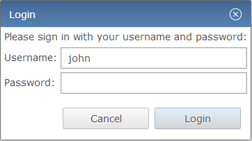
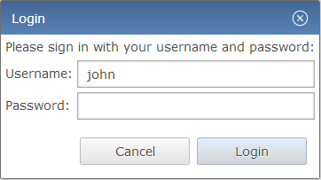
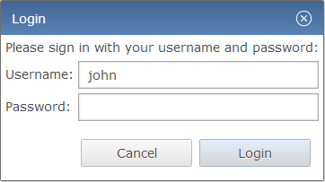

Index:
If you want to go directly to the theming reference, click here.
This article describes the CSS theming of RWT, the RAP Widget Toolkit. Like the theming preferences commonly provided by desktop systems, it allows developers to set the widgets default colors, fonts, borders, and more.
As an example, the following screenshots show the same dialog with the
default theme and with a custom theme.
As you can see, a custom theme does not only alter some colors, it also
affects the widgets, size, fonts, shadows, and more.
Even effects like hover and appear animations are different.

A custom theme
is a complete set of rules for all properties of all RAP widgets
found in the theming reference, just like the default
theme. (Such a complete theme
is also called a main theme
).
A custom theme can replace the default theme of RAP, which is used if no custom theme is set.
Custom themes are usually created by copying an existing main theme
(like the default or example themes) and modifying it. A
theme contribution
only adds some rules to an existing main theme.
This is often useful when only a few properties are to be changed, or when working with
custom variants.
Note: The default theme file can be found in the bundle "org.eclipse.rap.rwt", file "resources/resource/theme/default.css". The example themes can be found in the bundle "org.eclipse.rap.design.example", folder "theme". Both are part of the RAP target platform.
The RWT theming is not related to any Eclipse workbench concepts like the workbench theming or custom stack presentations. Also, the CSS files are not directly passed to the client's browser, but parsed and processed by RAP on the server side, as they are required for layout calculations. Therefore you can not add any arbitrary rules and expect them to be available in the client document. If you want to do that (e.g. for custom widgets), use the application configuration / branding API to add your CSS to the documents head, or load CSS files dynamically using JavaScriptExecuter or JavaScriptLoader.
This section explains the basic rules for writing CSS theme files. Themes are written in CSS using widget types as element names. The syntax must be valid CSS 2.1, although RAP does not support the complete CSS syntax. Some advanced concepts like "@"-rules and certain selector types are not supported.
Create a new .css file and place it anywhere in your project. Since the theme file can refer to images kept in the same project, so an extra theme folder is recommended. If the file contains non-ASCII characters, it has to be UTF-8 encoded. Don't forget to include everything in the project's build.properties file to make them available in a deployment.
A CSS file is simply a sequence of style rules. A style rule is a selector or a comma separated selector list, followed by a block of declarations enclosed in braces. Declarations start with a property name, followed by a colon, followed by a value and end with a semicolon. There is no inherent difference between the structure of a custom theme and a theme contribution. A custom theme simply needs to cover all widgets, while a theme contribution may consist of a single rule. The following is an example of a simple theme file, consisting of two style rules:
Button[PUSH], Button[TOGGLE] {
border: 2px solid blue;
color: rgb( 17, 23, 103 );
background-color: #f9f9f9;
}
Button[PUSH]:hover, Button[TOGGLE]:hover {
background-color: white;
}
A selector defines to which widgets or components of a widget a rule applies. Selectors can refer to SWT style flags and also to certain widget states. The element names to be used are either simple widget type names, such as Button and Table, or names of sub-components of a widget like ProgressBar-Indicator. A complete list of themeable widgets and their element names can be found in the theming reference.
Certain SWT style flags can be referred to in CSS selectors to allow to define a styling depending on the widget type. For style flags, the attribute syntax from CSS must be used:
Button[BORDER] {
...
}
In addition to style flags, which do not change during a widget's lifetime, there are also dynamic widget states a theme can refer to. To do so, use the CSS attribute syntax:
Button:hover {
...
}
Attributes and states can be mixed freely. For example, the following selector applies only to buttons that have the style flags SWT.PUSH and SWT.BORDER and are currently in state hover:
Button[PUSH][BORDER]:hover {
...
}
The styles and states that a theme can refer to depend on the widget and are also listed in the theming reference.
Normally, a theme setting affects all widgets of a given type equally. By defining custom variants it is possible to apply an individual presentation to particular widgets without affecting all widgets of that type. As an example, imagine an application that uses buttons in a special banner bar. These buttons should have a different font and text color than normal buttons. By making these buttons part of a variant (e.g. "mybutton"), you can define separate CSS rules for these widgets.
To implement this, the buttons in the banner bar are marked as belonging to a custom variant (e.g. "mybutton") in the Java code using SWT widget data with the constant RWT.CUSTOM_VARIANT:
button.setData( RWT.CUSTOM_VARIANT, "mybutton" );
In the theme CSS file, these widget variants can be referred to using the
class
notation known from CSS used for HTML:
Button.mybutton {
...
}
The themeable properties are also widget specific. Not all RWT widgets are equally customizable, some provide a large set of themeable properties, others less. An overview of all available elements and their themeable CSS properties can be found in the theming reference. As well as the properties itself, also the syntax for the property values is a subset from CSS. It is also documented in the reference.
If more than one rule applies to a given element, property values defined in one rule can overwrite those in another rule. The precedence of rules and properties is defined in the CSS specification. In short, it is defined by the specificity of a rule and its position in the CSS file. Please refer to the CSS specification for a detailed description.
When making theme contributions, they are simply concatenated to the main theme file, thereby overwriting the rules from the theme they contribute to. However, many contributions can be added to the same theme, and the order in which they are appended is undefined. Therefore, you should only add rules to the extension CSS file that will not be overridden by other contributions. As an example, rules for custom variants (see above) that are defined in the same theme will be safe as long as other theme contributions do not reference the same variants.
The SWT classes Display and Device contain methods that return default system colors, a system font, and system images. In RAP, these defaults are also controlled by the theme. For details, see the theme reference of the Display element.
Note: For workbench applications, please read
Setting Themes for Workbench Applications
instead.
In order to make your theme available for a RAP application, you have to register it in the application configuration first. This is done using the method Application#addStyleSheet. Example:
application.addStyleSheet( "my.application.aquablue", "theme/aquablue.css" );
Now your theme is registered with the id "my.application.aquablue", but it still needs to be activated.
To make your application use the custom theme, you need to configure your entry point accordingly using the same theme id. Example:
Map<String, String> properties = new HashMap<String, String>(); properties.put( WebClient.THEME_ID, "my.application.aquablue" ); application.addEntryPoint( "/example", Example.class, properties );
Different entry points can of course use different themes.
Registering contribution file is done the same way a main theme file is registered, only the order defines which is which.
application.addStyleSheet( "my.application.aquablue", "theme/aquablue.css" ); application.addStyleSheet( "my.application.aquablue", "aqua-extensions.css" );
The theme contribution aqua-extensions.css will now be added to the existing theme my.application.aquablue. To contribute to the default theme, use the constant RWT.DEFAULT_THEME_ID:
application.addStyleSheet( RWT.DEFAULT_THEME_ID, "default-theme-extension.css" );
In that case it is not necessary to register or activate a main theme, as the default theme is both already.
In order to make your theme available for workbench applications, you have to register it with the extension point org.eclipse.rap.ui.themes. In the plugin.xml of your application project, add an extension like this:
<extension
point="org.eclipse.rap.ui.themes">
<theme
id="my.application.aquablue"
name="Aqua Blue Test Theme"
file="theme/aquablue.css" />
</extension>
Now your theme is registered with the id my.application.aquablue, but it still needs to be activated.
To make your application use the custom theme you have to register a branding. In short, a branding defines several settings, that may then be bound to a registered entry point. To assign a theme, simply put the id used in the theme registration in the extensions themeId property. For more details, refer to the article on RAP Branding.
Register the contribution file with the extension point org.eclipse.rap.ui.themes, using a themeContribution element. In the plugin.xml of your application project, the extension will look like this:
<extension
point="org.eclipse.rap.ui.themes">
<themeContribution
themeId="my.application.aquablue"
file="aqua-extensions.css" />
</extension>
Now your theme contribution is registered and will automatically added to the
existing theme. To contribute to the default theme, use
org.eclipse.rap.rwt.theme.Default
in the themeId property;
In that case it is not necessary to register or activate a main theme, as the default
theme is both already.